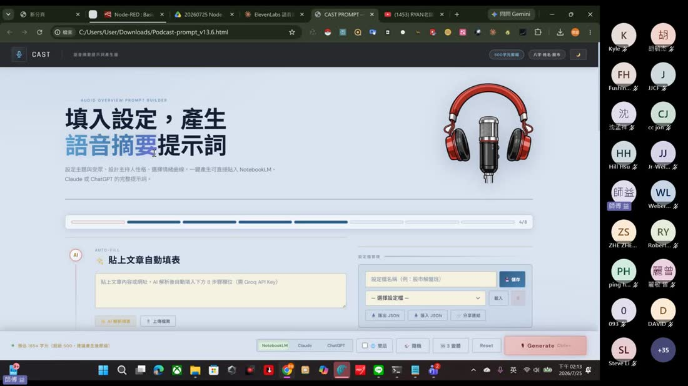
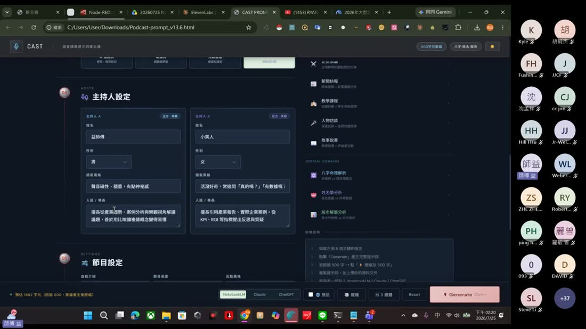
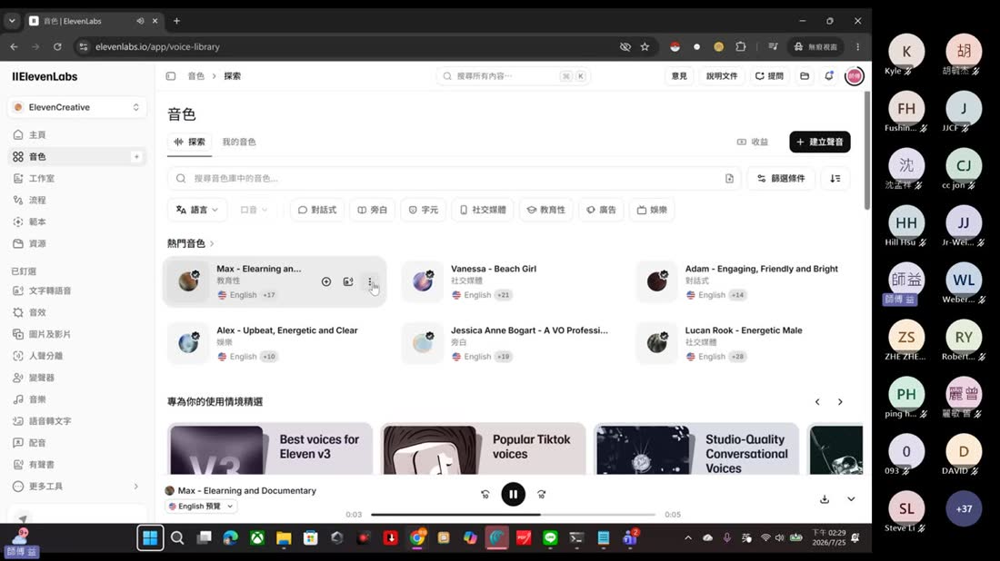
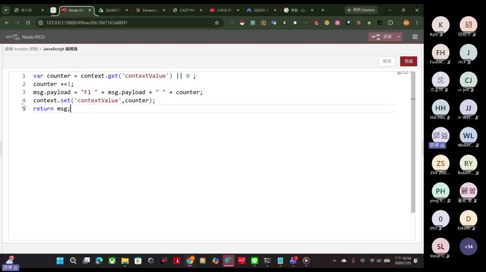
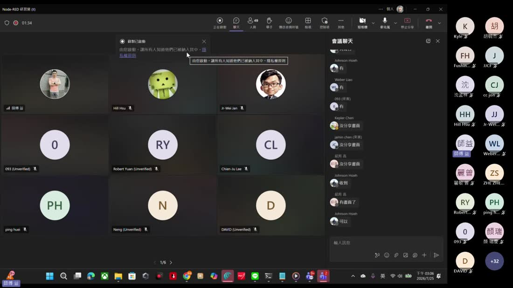
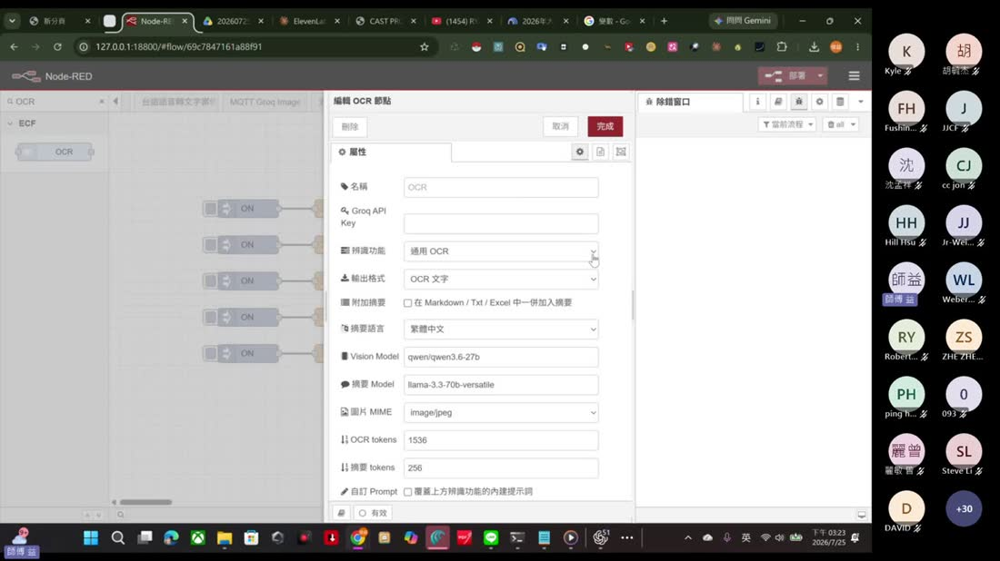
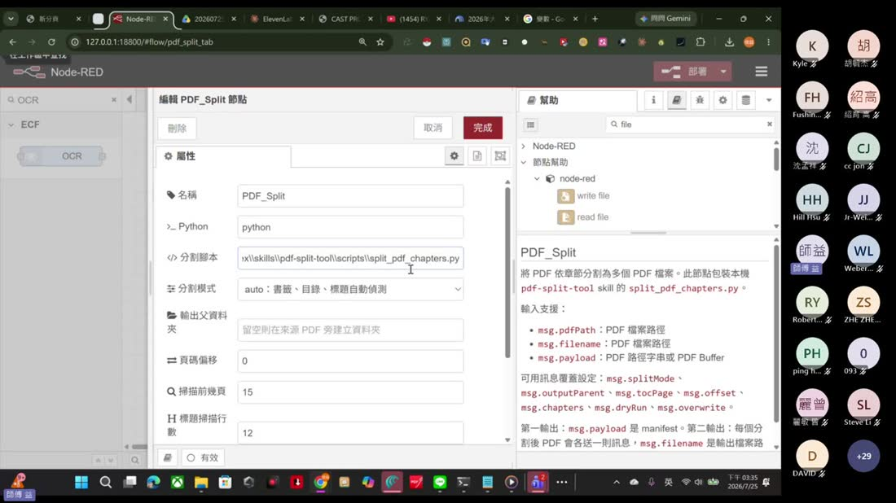
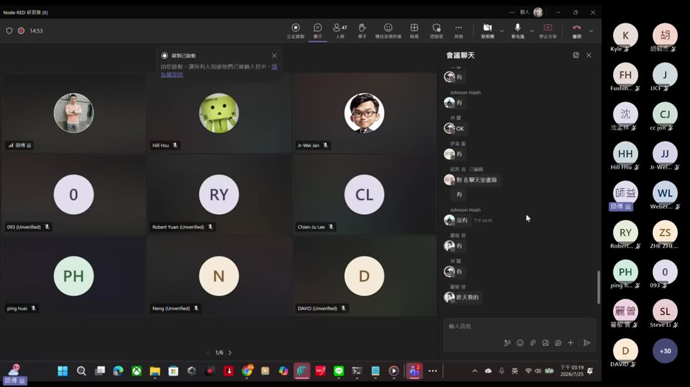
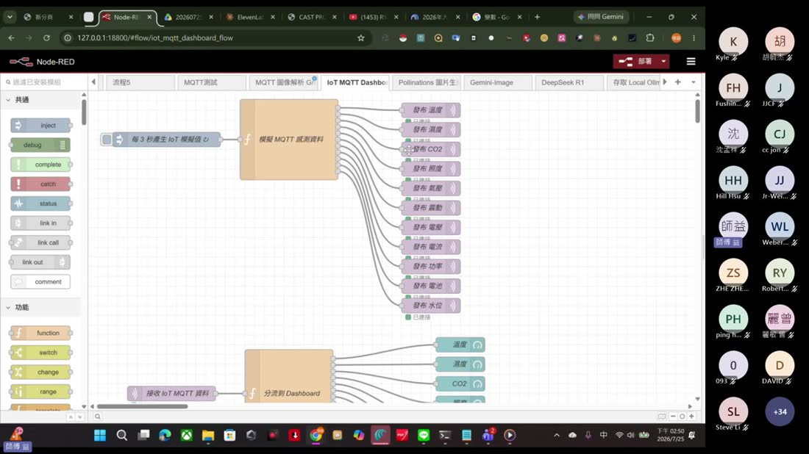

0. 課程資訊與教材
| 課程名稱 | Node-RED 研習營 (II) |
|---|---|
| 上課日期 | 2026/07/25（六）下午開始，全長 2 小時 39 分 4 秒 |
| 講師 | 益師傅（楊俊益，暱稱 ECF；智慧立方有限公司） |
| 參與人數 | 約 55 位學員（Teams 線上直播） |
| 本場主題 | CAST 提示詞產生器與 ElevenLabs、三層變數、用 Codex 把程式與 SKILL 轉成 Node-RED 自訂節點、節點安裝、PDF 章節切割實戰 |
| 課程教材 | Drive 資料夾：課程錄影（子資料夾）、PDF_Split 節點完整專案（子資料夾）、5 個檔案 |
📁 課程資料夾（Google Drive）
🔗 開啟「20260725 Node-RED 研習營 (II)」資料夾 ›
🎬 課堂錄影（可直接在頁面播放）
🧩 教材檔案清單
| 檔案／資料夾 | 內容 |
|---|---|
| Node-RED PDF_Split 節點（資料夾） | 完整的節點專案：node-red-contrib-pdf-split/（package.json／pdf-split.js／pdf-split.html／README）、examples/（三個範例 flow）、docs/（安裝與範例說明）、INSTALL.md、README.md |
Split_PDF_Chapters_SKILL.md | PDF 章節切割的 Skill 規格書——這份就是被 Codex 拿去變成節點的原料 |
PDF切割練習.json | 可直接匯入的練習 flow：inject（放入 PDF 路徑）＋ file inject → PDF_Split → 兩個 debug（manifest／分割後 PDF） |
Podcast-prompt_v13.6.html | CAST 語音摘要提示詞產生器（單檔 HTML，210 KB） |
變數 (2).json | 三層變數的實作 flow（F1～F6，兩個標籤頁） |
BASIC_AQI (2).json | 第一場 AQI flow 的加強版，多了一顆處理用的 function 節點 |
<你的 API Key>。1. 一張圖看懂本場
這場的主線只有一句話：把「你已經有的東西」變成 Node-RED 裡可以重複使用的零件。
2. CAST 語音摘要提示詞產生器
開場先花約 40 分鐘介紹他自己做的一支單檔 HTML 工具（教材裡的 Podcast-prompt_v13.6.html），這是他持續迭代到 13.6 版的作品。
它在解決什麼問題
[00:16:44] 老師的說法是：NotebookLM 這類工具給你的是「一張白紙」，你要自己想怎麼寫提示詞，坦白講不容易。CAST 的做法是把「一集語音節目該設定的東西」拆成八個步驟的表單，填完一鍵產生完整提示詞，可以直接貼進 NotebookLM、Claude 或 ChatGPT。

八個步驟填什麼
| 步驟 | 內容 | 課堂上的示範值 |
|---|---|---|
| 01 分析主題 | 主題名稱，附常用主題快選 | [00:21:04]「提示詞工程於製造業的落地運用」 |
| 02 目標聽眾 | 初學者／一般大眾／專業人士／主管／投資人，影響術語密度 | 一般大眾 |
| 03 情緒節奏曲線 | W 型起伏／漸強式／先高後穩／雲霄飛車 | 先高後穩（嚴肅知識型） |
| 04 主持人設定 | 兩位主持人的姓名、性別、語氣風格、人設專長；一正一反 | 「益師傅」（正方・樂觀，聲音磁性、穩重）／「小美人」（反方・質疑，活潑好奇，常問「真的嗎？」） |
| 05 節目設定 | 自我介紹長度、節目長度（3-5／8-12／15-20 分）、互動風格 | [00:23:41] 15-20 分 |
| 06 焦點關鍵字 | 節目中必須提到的詞 | [00:24:23] 指定要談到 AI、Agent |
| 07 禁止提及 | 不得出現的主題或詞彙 | [00:24:36] 例如不能提到競品名稱 |
| 08 額外要求 | 繁中／口語化／幽默／金句／引用數據／Hook 等 | 繁中＋口語化 |

不只產提示詞，還能直接生出音檔
[00:42:15] 右側「完整語音文案 → 音檔／MP4」會請 AI 分段寫出完整的雙主持人逐句對話（帶情緒標籤如 [excited]、[curious]、[thoughtful]），依節目長度約 3200／4500／6000 字，再交給 ElevenLabs 用 A／B 兩個聲音合成完整音檔（WAV）與黑底字幕 MP4。
3. ElevenLabs V3：申請與接上
[00:26:32] 起 全班一起註冊 ElevenLabs 並取得金鑰，這一段是純操作，但幾個細節很容易卡住。
- 註冊帳號：
elevenlabs.io，可用 Google 帳號登入。[00:27:18] - 免費方案能做什麼：[00:30:58] 可以克隆自己的聲音，音色庫可以存到 10 個。老師說他自己也沒有很常用，付費一個月幾塊美金，看需求決定。[00:34:26]
- 建立 API 金鑰：左側選開發者（Developers） → API 金鑰 → 右上角「建立密鑰」。[00:31:57]
- 一定要設到期時間[00:32:21]，而且金鑰只會顯示這一次，關掉對話框就看不到了，務必先複製。
- 貼回 CAST 工具：貼進右側「AI 設定」的 ELEVENLABS API KEY 欄位，並在「試聽語音引擎」選 ElevenLabs V3。[00:38:48] 老師提醒：這裡要記得寫 V3，才會有聲音。
- 設定 A／B 兩位主持人的聲音：主持人 A 可以填自訂 Voice ID（用自己克隆的聲音），主持人 B 從內建音色挑（課堂上用 Matilda 女聲）。

4. 三層變數：context／flow／global
[00:48:02] 起 這是本場最扎實的基本功。老師用教材 變數 (2).json（F1～F6 六個 function）一格一格示範，看完就懂了。
先講變數是什麼
[00:48:15] 老師用 Google 圖片裡「變數像個盒子」的比喻開場：盒子裡的東西是什麼，端視你放了什麼進去，放進去的也可以改變；為變數命名，就像為一個空盒子貼上標籤。相對的，常數就是固定不變的那種。
三層的差別
| 層級 | 寫法 | 看得到的範圍 | 什麼時候用 |
|---|---|---|---|
| context | context.get() / context.set() | 只有這一顆節點自己 | 這顆節點的內部計數、暫存 |
| flow | flow.get() / flow.set() | 同一個標籤頁裡的所有節點[00:52:22] | 一條流程裡多個節點要共用的值 |
| global | global.get() / global.set() | 整個 Node-RED，跨所有標籤頁[01:08:00] | 設定值、跨流程共用的狀態 |
課堂上實際跑的程式碼

|| 0 是關鍵：第一次跑的時候 context.get() 拿到的是 undefined，用 || 0 給它一個初始值。
觀察重點（老師逐條驗證）
- [00:59:45] F1 按一次變 1，再按變 2——context 會記住上一次的值。
- [01:01:14] F1 跟 F2 各數各的，互不影響，因為 context 是節點自己的。
- [01:04:26] F3 加 1、F4 加 2，動的是同一個 flowValue，所以交替按數字會一路累加。
- [01:06:16] 切到另一個標籤頁的 F6，仍讀得到 globalValue——這就是 global 的用途。
counter，就會互相覆蓋。這是選擇用哪一層的判斷依據——能用小的就不要用大的。5. 核心：把程式變成一顆節點
這是整場的重點，也是第一場埋下的伏筆（第一場老師說「甚至你可以做自己想要做的節點」）。
為什麼要做成節點
[01:27:09] 老師的理由很實際：如果只是一支網頁程式，你每次都得另外打開它、手動操作。做成節點之後，它就進到 Node-RED 裡——可以被排程觸發、可以跟其他節點串接、可以納入流程管理。他的原話是：「我以後都只要在 Node-RED 裡頭去執行這個程式，全部都放在 Node-RED 裡頭來，所謂的排程管理的概念。」
案例一：全能辨識 HTML → OCR 節點
[01:25:14] 素材是他之前寫的一支網頁程式「全能辨識系統 v3.html」。他丟給 Codex 的指令，值得原句抄下來：
[01:28:01] 老師強調這句話的結構：轉換 ＋ 命名 ＋ 指定要支援什麼 ＋ 順便安裝 ＋ 順便給範例 ＋ 順便放進環境。一次講完，Codex 就會一路做到底。
Codex 產出了什麼
| 檔案 | 作用 |
|---|---|
package.json | 節點套件的定義檔（Node-RED 靠它認得這是一顆節點） |
ocr.js | 節點的後端邏輯（實際去呼叫 Groq 視覺模型） |
ocr.html | 節點在編輯器裡的設定畫面與說明文件 |
README.md | 使用說明 |
examples/OCR_Groq_example_flow.json | 可直接匯入的範例流程 |

qwen/qwen3.6-27b）、摘要 Model（llama-3.3-70b-versatile）、圖片 MIME、OCR tokens、摘要 tokens、自訂 Prompt。左上角節點面板已經出現 ECF › OCR 這顆節點。案例二：SKILL.md → PDF_Split 節點
[01:14:16] 更有意思的是這個：素材不是程式，而是一份寫好的規格文件 Split_PDF_Chapters_SKILL.md。老師先示範怎麼把它變成 Codex 的 Skill：
[01:17:11] 做好之後，「下次只要在這邊輸入一個斜線」就能叫用（/PDF切割），把 PDF 丟進去就會切。接著再進一步：把這個 Skill 變成 Node-RED 節點。[01:36:28]
6. 實戰：PDF_Split 節點
教材資料夾裡有完整的節點專案與練習 flow，這一節把它拆開來看。
節點長什麼樣、怎麼用

| 項目 | 內容 |
|---|---|
| 輸入 | msg.pdfPath（PDF 檔案路徑）、msg.filename（檔案路徑）、msg.payload（路徑字串或 PDF Buffer） |
| 可覆蓋設定 | msg.splitMode、msg.outputParent、msg.tocPage、msg.offset、msg.chapters、msg.dryRun、msg.overwrite |
| 分割模式 | auto（書籤／目錄／標題自動偵測）、toc（目錄）、headings（標題）、manual（手動指定頁碼範圍） |
| 第一個輸出 | msg.payload 是 manifest：完整分割結果與驗證資訊 |
| 第二個輸出 | 每個分割後的 PDF 各送一則訊息，msg.filename 是輸出檔案路徑 |
| 底層 | 包裝本機 pdf-split-tool skill 的 split_pdf_chapters.py，需要 Python 與 pypdf |
實際切出來的結果

manifest.json。最後一行是驗證：8 個 PDF 均可正常讀取，實際頁數全部符合章節範圍；原始 PDF 未被修改。老師在課堂上的 Node-RED 端實測
[01:41:05] 有學員在聊天室貼出自己成功的畫面：PDF_Split 節點下方顯示 Split 3 files，除錯窗口印出 count: 3, files: array[3], manifest: object，以及自訂的警告訊息「成功分割產出 3 個章節 PDF 檔案！」，下游還接了一顆 function 解析 manifest 再輸出摘要物件。
7. 節點安裝與 file inject 踩坑
安裝節點的兩種方式
① 從 palette 安裝（找得到現成的）
- 右上角三條線 → 設定（Settings） → 控制板／Palette。[01:32:40]
- 切到「安裝」分頁，搜尋節點名稱，按安裝。
- 「節點」分頁可以看到已安裝的所有模組，也能在這裡移除或停用。
② 用 npm 指令裝本機做好的節點
[02:29:04] 自己（或 Codex）做好的節點還沒發佈到 npm，就用本機路徑安裝。老師直接把指令貼在聊天室：
- 要切到
.node-red目錄底下再裝，這是 Node-RED 讀取模組的位置。 - 裝完要重新啟動 Node-RED，節點才會出現在左側面板。
- [01:34:24] 老師提醒：你們做出來的節點名稱可能跟我不一樣（因為是各自的 AI 生成的），安裝路徑要換成自己的。
- [01:34:24] 要用 file inject 選檔案的話，得先裝
node-red-contrib-browser-utils，file inject 就是這個套件提供的。
🐛 踩坑：選了檔案卻「分割失敗」
原因：[01:59:53] file inject 送出的
msg.filename 只有檔名（例如 OceanofPDF.com_Learning_AI_Tools_in_Tableau_-_Ann_Jackson.pdf），不是完整路徑。舊版 PDF_Split 拿到 msg.filename 就直接當路徑去找，當然找不到。老師的處理方式跟第一場一模一樣：把現象講給 Codex 聽——「能否根據自己所選的 PDF 檔？」Codex 改寫了判斷邏輯：
- 如果
msg.pdfPath/msg.filename/msg.payload是實際存在的 PDF 路徑，才當路徑使用。 - 如果不是完整路徑，但
msg.payload是使用者選取的 PDF 內容，就先存成暫存 PDF 再進行分割。 - 同時支援
Buffer、Uint8Array、陣列、payload.data等常見的 file inject 格式。
[02:00:03] 改完重新安裝、重啟 Node-RED，新版節點載入成功，再選檔案就正常切了。
8. 延伸：MQTT 圖像解析與 IoT 儀表板
課堂中段老師快速帶過兩個他已經做好的流程，當作「節點做出來以後可以怎麼用」的示範。
IoT MQTT 儀表板

node-red-dashboard 3.6.5。MQTT 圖像解析＋免費網頁 TTS
[02:15:00] 另一條流程：訂閱 MQTT 傳來的即時影像 → Parse Data URI（解析 data URI、判斷是 Buffer 還是字串）→ Extract Base64 → 送去 Groq 圖像解析 → 把解析出的文字唸出來。這裡有個省錢的關鍵改動，老師給 Codex 的指令是：
Codex 實際做的修改：把 Gemini Vision API 換成 Groq 圖像解析 API（模型 meta-llama/llama-4-scout-17b-16e-instruct）、移除 Gemini TTS 與音訊轉 WAV、存檔的流程、改用 Dashboard 內瀏覽器內建的免費 TTS（speechSynthesis）播放解析文字，並順手修正原流程中 HTTP 回應沒有接到解析節點的問題。
老師課堂上展示的其他節點
- 台語語音節點（台語語音轉文字案例、台語節點案例兩個標籤頁）
- Pollinations 圖片生成、Gemini-Image、DeepSeek R1、存取 Local Ollama
- MySQL Example／MQTT to MySQL／Chart 資料儲存／uiTable
- 骰子（dice）、3×3 拉霸遊戲——他反覆強調 Node-RED 不是只能做工業應用
9. 課後自我檢核表
- 我能講出 context／flow／global 三層變數各自看得到的範圍。
- 我會在 function 節點裡用
flow.get()/flow.set()，也知道|| 0是在給初始值。 - 我知道變數名稱在同一個標籤頁會打架，所以能用小的層級就不用大的。
- 我會從 palette 安裝節點，也會用
npm.cmd install "本機路徑" --save裝自己做的節點。 - 我知道裝完節點必須重啟 Node-RED，而且要先裝
node-red-contrib-browser-utils才有 file inject。 - 我看得懂 PDF_Split 的兩個輸出：manifest 與每一份分割後的 PDF。
- 我能寫出一句完整的轉換指令給 AI：轉換＋命名＋指定支援什麼＋安裝＋給範例＋置入環境。
- 我知道 file inject 的
msg.filename只有檔名不是完整路徑，遇到「找不到檔案」時會往這個方向查。 - 我會用 ElevenLabs 建立 API 金鑰，也記得金鑰只顯示一次、要設到期時間。
- ★ 最重要：我理解這堂課的心法——手上任何一支程式或一份規格文件，都可以被轉成 Node-RED 的一顆節點，從此納入排程與流程管理。
10. 老師金句
11. 資料來源與整理說明
- 原始教材：Google Drive 資料夾「20260725 Node-RED 研習營 (II)」——課堂錄影一段（2 小時 39 分 4 秒）、PDF_Split 節點完整專案資料夾，以及
Split_PDF_Chapters_SKILL.md、PDF切割練習.json、Podcast-prompt_v13.6.html、變數 (2).json、BASIC_AQI (2).json。 - 整理方法：錄影用 ffmpeg 每 40 秒抽一格（共 239 格），逐格用眼睛看過並記錄畫面內容；同時用 faster-whisper（small／int8）產出全程逐字稿（5,419 段），兩者交叉比對。節點專案的 README／INSTALL／SKILL.md 與 flow JSON 逐檔閱讀，用來還原設定欄位與程式碼。
- 可信度標註：畫面截圖、節點設定欄位、Codex 的回覆內容、模型名稱皆為錄影實錄；程式碼片段以教材檔案的實際內容為準。時間戳來自逐字稿，因語音辨識可能有數秒誤差。
- 金鑰處理：錄影中出現過 ElevenLabs 與環境部的金鑰明碼畫面，依專案規則一律不收錄。
- 一則畫面上的說明：[02:13:00] 老師中途打開了一份標題為「訂閱制第三季｜第二堂課」的簡報（六格圖：流程模擬／教學封裝／版型資產／簡報復刻／Skill 協作／多模態產品，底下寫「先拆解需求 → 再交給 Agent → 最後驗證輸出」），那是他另一門訂閱制課程的教材，在這場當作補充展示，不是本場的簡報。